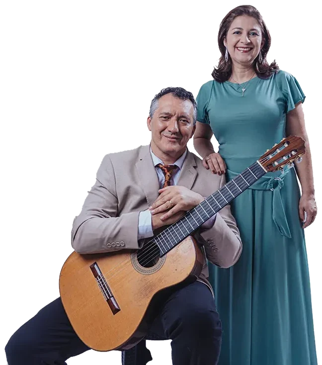
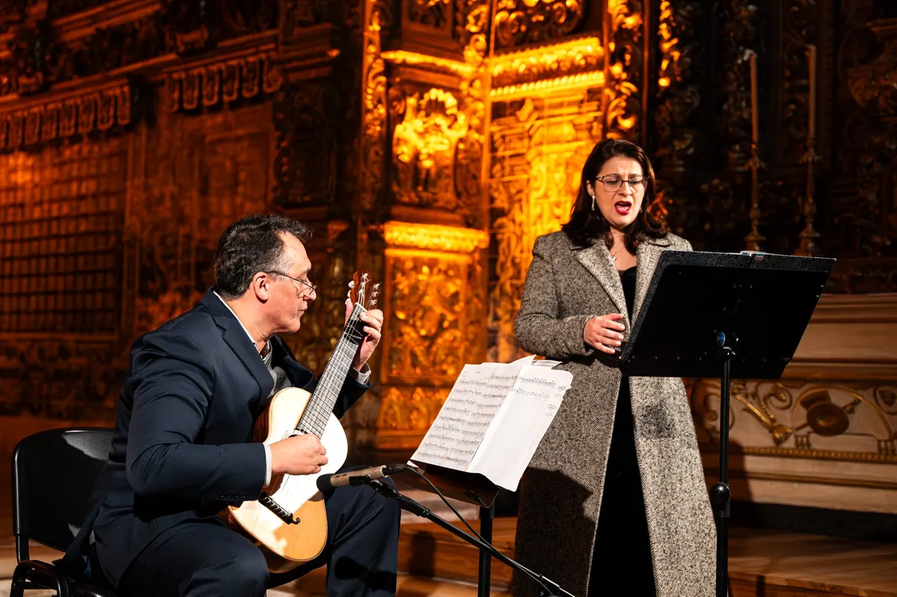
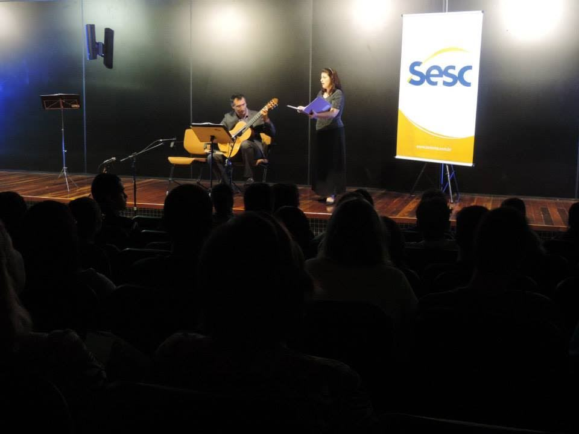
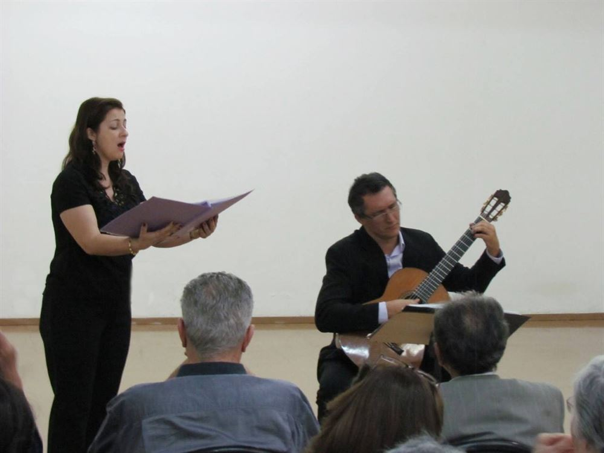
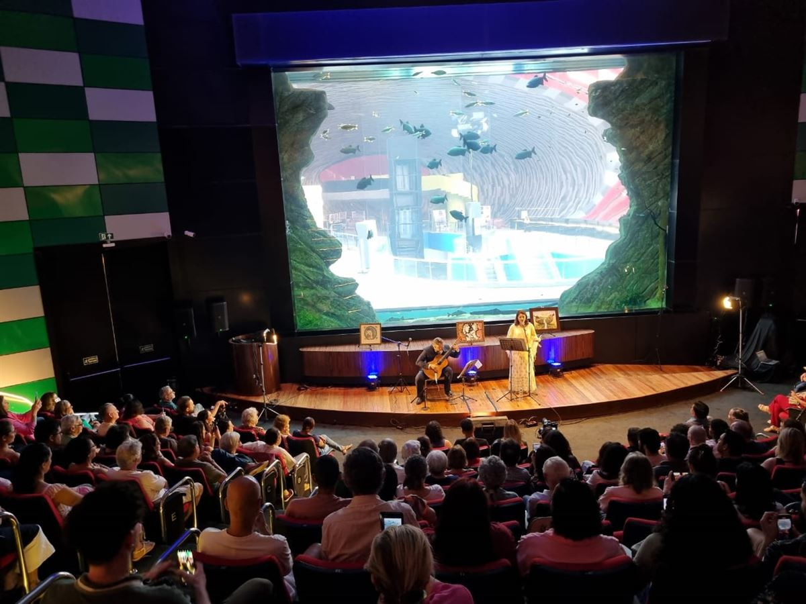
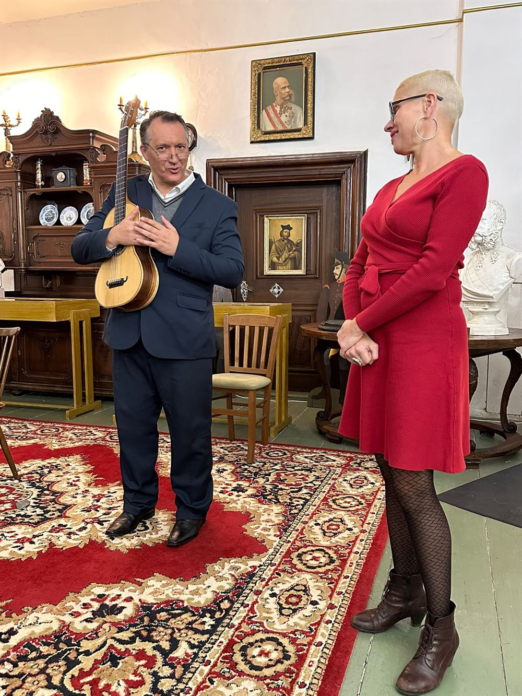
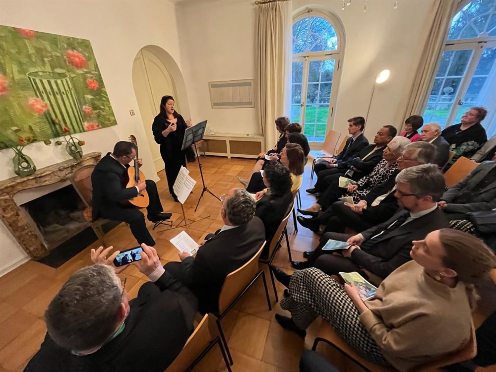
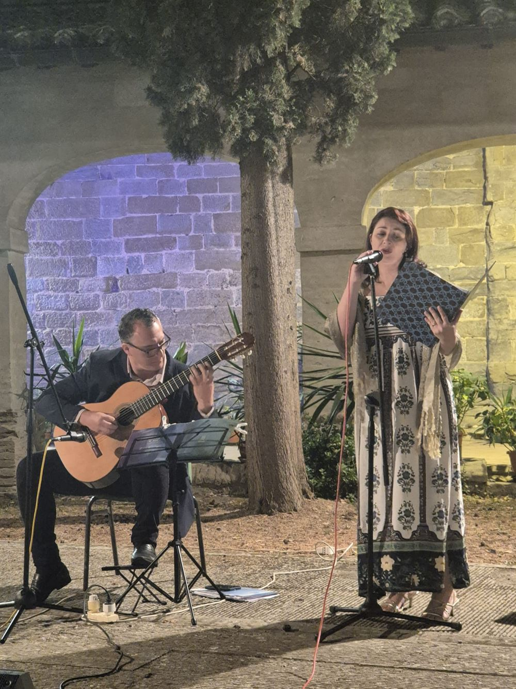
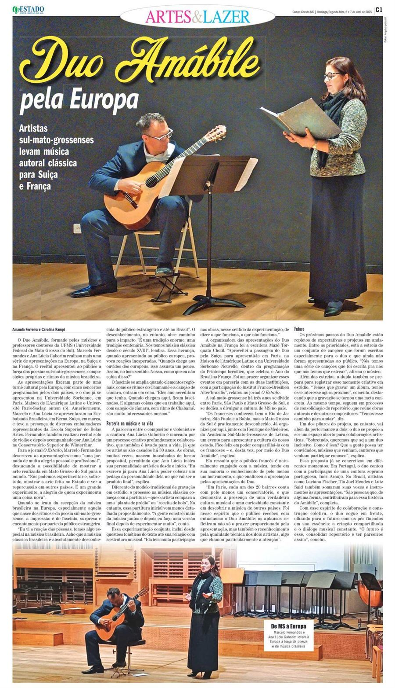

Duo Amábile
A soprano Ana Lúcia Gaborim e o violonista Marcelo Fernandes. Canção brasileira para canto e violão, em palcos do Brasil e da Europa desde 2015.

O duo
Casados desde 1998, juntos no palco desde 2015.
O Duo Amábile se dedica à canção brasileira para canto e violão, das modinhas do século XIX às obras escritas para o próprio Duo. Boa parte do repertório é de Marcelo Fernandes, que musica poemas de autores como Carlos Nejar, Raquel Naveira e Rubênio Marcelo, com estreia na voz de Ana Lúcia Gaborim.
A estreia foi em 2015, no projeto SESC Partituras, em Corumbá. Desde então o Duo se apresentou em seis países, em lugares como a Academia Brasileira de Letras, a Université Sorbonne Nouvelle, a Universidade de Aveiro e a residência da Embaixadora do Brasil em Berna, e percorreu dezesseis cidades de Mato Grosso do Sul.

Trajetória
Concertos e projetos escolhidos, desde 2015.
-
2015
SESC Partituras, a estreia
Teatro do SESC · Corumbá, MS
Convidados para o projeto SESC Partituras, os dois tocaram juntos pela primeira vez: música de câmara brasileira escrita ou arranjada para canto e violão, editada e publicada pelo SESC.
Depois vieram apresentações nos campi da UFMS em Chapadão do Sul, Coxim, Paranaíba, Ponta Porã e Três Lagoas. No fim do ano, o Duo encerrou a FETEC no Memorial da Cultura de MS.

SESC Partituras, o primeiro concerto do Duo. -
2016
A primeira gravação em estúdio
Campo Grande e interior de MS
O Duo gravou “As árvores do meu lugar”, poema de Eliane Guaraldo com música de Marcelo Fernandes, para o CD “As canções que fizemos para ela: homenagem a Maria Betânia”, lançado de forma independente por professores e compositores da UFMS.
No mesmo ano tocou em eventos acadêmicos e culturais, entre eles o Chá Literário da Academia Sul-mato-grossense de Letras, no Centro Cultural José Otávio Guizzo.

Chá Literário da Academia Sul-mato-grossense de Letras. -
2017
A música brasileira em seis cordas
Oito cidades do interior de MS
Homenagem a Dilermando Reis, patrocinada pelo FIC, o Fundo de Investimentos Culturais do Estado. De maio a setembro o Duo passou por Bonito, Corguinho, Naviraí, Nova Andradina, Ponta Porã, Rochedo, São Gabriel do Oeste e Sidrolândia.
O concerto de encerramento foi no Teatro Glauce Rocha, em Campo Grande, com os convidados Eduardo Martinelli, Luciana Fisher e Renato Oliveira. Em outubro, o Duo voltou ao mesmo teatro para o Movimento Concerto.

Cartaz do projeto, patrocinado pelo FIC/MS. -
2019
Canções poéticas e imagens modernistas
Pontos turísticos de Campo Grande · FMIC
Contemplado pelo Fundo Municipal de Investimentos Culturais, o projeto rendeu uma série de vídeos gravados em pontos turísticos da cidade, com o violinista Heitor Lotti e a cantora lírica Andressa Chinzarian.
Em junho, “Fogo da Poesia” estreou na Academia Brasileira de Letras de Mato Grosso do Sul, com transmissão pela TV Pantanal.

Recital do Duo em 2019. -
20202021
Concertos sem plateia
Teatro Glauce Rocha · transmissão ao vivo
Na pandemia o Duo continuou tocando no Movimento Concerto on-line: apresentações no Teatro Glauce Rocha, sem público, transmitidas ao vivo pela TV UFMS. Duas delas estão na página de vídeos.
-
2021
“Ode à Campo Grande” vira clipe
Programa Meu Mato Grosso do Sul · TV Morena
A canção, com música de Marcelo Fernandes sobre poema de Rubênio Marcelo, foi escolhida para o aniversário da capital. O Duo gravou em estúdio e ela virou clipe.
Nessa época Marcelo escreveu uma série de canções para o Duo sobre poemas de Delasnieve Daspet, Rubênio Marcelo e Carlos Nejar, cantadas na Academia Sul-mato-grossense de Letras e em eventos da AFLAMS. O Duo também tocou ao vivo no “Tudo de Bom”, do SBT.
-
2022
Encontro com a Música Clássica
Teatro Glauce Rocha · agosto
O Duo entrou na programação do festival da Orquestra Sinfônica Municipal de Campo Grande.
Entre abril e julho já tinha tocado no Instituto Histórico e Geográfico de MS, gravado para a TV Assembleia, homenageado a poeta Raquel Naveira e participado do lançamento da revista “Estação Folclore”, no SESC Cultura. No fim do ano veio novo apoio do FIC, para o projeto “Cem anos de Semana de Arte Moderna em Terras Pantaneiras”.

Teatro Glauce Rocha, Campo Grande. -
2023
Academia Brasileira de Letras, no Rio
ABL e PEN Clube do Brasil · Rio de Janeiro
O Duo tocou na sede do PEN Clube do Brasil, na criação do PEN Clube Centro-Oeste, e na Academia Brasileira de Letras, onde estreou uma obra de Marcelo Fernandes sobre poema de Carlos Nejar.
Em abril, tinha aberto o Festival Internacional de Violão, no Teatro Glauce Rocha.

Rio de Janeiro, 2023. -
2023
Cem anos de Semana de Arte Moderna em Terras Pantaneiras
Seis cidades de MS
Com o apoio do FIC, o Duo voltou ao interior: Aquidauana, Corumbá, Coxim, Dourados, Ponta Porã e Três Lagoas, em parceria com a UEMS, o IFMS e a UFMS. Todos os concertos foram gratuitos.
O encerramento, em 11 de outubro, comemorou a divisão do estado no Bioparque Pantanal, com o teatro lotado.

Encerramento no Bioparque Pantanal, 11 de outubro de 2023. -
2023
Memorial da América Latina
São Paulo · setembro
O Duo abriu o VIII IFLAC World Brazil Peace Congress, com o violinista Heitor Lotti como convidado.
Ainda em 2023, Marcelo compôs duas canções sobre poemas de Raquel Naveira para o CD “Cabeza de Vaca, Andarilho das Américas”, lançado no Teatro Glauce Rocha por um coletivo de artistas sul-mato-grossenses.

Memorial da América Latina, São Paulo. -
2024
Projeto ALMAR: fados
SESC Prosa · 8 de outubro
Um concerto de fados portugueses com os poetas Rubênio Marcelo e Ana Maria Bernardelli e músicos convidados: a soprano Luciana Fisher, Luiz Sayd e Joel Mendes.

Lançamento do livro do projeto ALMAR, SESC Prosa. -
2024
Aveiro, Festivais de Outono
Igreja das Carmelitas · Portugal · novembro
Convite dos Festivais de Outono da Universidade de Aveiro. No programa, canções europeias e brasileiras, entre elas composições de Marcelo Fernandes.

Igreja das Carmelitas, Aveiro, Portugal. -
2024
Nepomuk, Svatojánské Muzeum
República Tcheca · novembro
Concerto na programação cultural do museu, a convite do consulado tcheco, na mesma viagem que levou o Duo a Portugal.

Svatojánské Muzeum, Nepomuk, República Tcheca. -
2025
Berna e Paris
Suíça e França · março e abril
Em Berna, o concerto foi na residência da Embaixadora do Brasil, para embaixadores de vários países. Em Paris, na Maison de l’Amérique Latine e na Université Sorbonne Nouvelle.
No programa, canções de Marcelo Fernandes sobre poemas de Delasnieve Daspet, Raquel Naveira e Rubênio Marcelo, e obras do compositor Otto Pintiaski. Na mesma turnê, Marcelo fez um recital solo no Conservatório de Winterthur.

Residência da Embaixadora do Brasil, Berna, Suíça. -
2025
Úmbria: Todi e Deruta
Itália · julho
Dois concertos na Úmbria: em Todi, no festival Suoni dal legno, e no Museo Regionale della Ceramica, em Deruta.

Festival “Suoni dal legno”, Todi, Itália. -
2025
Cerimônias e aberturas
Campo Grande, MS
Posse da diretoria da OAB no Teatro Rubens Gil de Camillo, em 29 de janeiro; Semana de Recepção aos alunos de Música da UFMS, no Anfiteatro Luís Felipe de Oliveira, em março; e abertura da COP 30 Bioma Pantanal, no Auditório Insted, em 30 de setembro.
-
2026
Femina Vox e as escolas municipais
Teatro Rubens Gil de Camilo · 16 de março
O Duo abriu o Femina Vox, evento internacional em Campo Grande.
No mesmo ano começou o projeto “Entre o rural e o urbano: as canções de Almir Sater e Chico Buarque”, com concertos em escolas públicas municipais.
Mapa
Seis países com o Duo, e mais oito onde Marcelo Fernandes tocou como solista.
Países onde o Duo se apresentou Onde Marcelo Fernandes tocou como solista
Escolha um ponto no mapa.
Imprensa
Matérias em veículos do Brasil e de Portugal.
-
Festivais de Outono apresentam hoje o Duo Amábile
Diário de Aveiro · Portugal · nov. 2024O jornal anuncia o concerto na Igreja das Carmelitas, dentro dos Festivais de Outono da Universidade de Aveiro.
Ler a matéria -

Duo Amábile pela Europa
O Estado · Artes&Lazer · abr. 2025Página inteira sobre a turnê pela Suíça e pela França: Berna, a Maison de l’Amérique Latine, a Sorbonne Nouvelle e como nascem as canções do Duo.
Baixar a página -
Duo Amábile realiza concertos na Europa
Correio do Estado · dez. 2024A viagem que levou o Duo à República Tcheca e a Portugal, com repertório de canção brasileira contemporânea.
Ler a matéria -
Recital na Academia Brasileira de Letras, no Rio
Violão Brasileiro · 2023O site de violão registra o recital na ABL e a estreia da obra de Marcelo Fernandes sobre poema de Carlos Nejar.
Ler a matéria -
Em noite histórica na ABL, Duo Amábile homenageia Delasnieve Daspet e Carlos Nejar
O Estado Online · 2023A viagem ao Rio de Janeiro para os recitais na Academia Brasileira de Letras e no PEN Clube do Brasil.
Ler a matéria -
Semana de Arte Moderna recebe homenagem no Bioparque Pantanal
G1 Mato Grosso do Sul · out. 2023O encerramento do projeto “Cem anos de Semana de Arte Moderna em Terras Pantaneiras”, com teatro lotado em Campo Grande.
Ler a matéria -
Semana de Arte Moderna é homenageada no Mato Grosso do Sul
Fundação de Cultura de MS · 2023O projeto apoiado pelo FIC levou concertos gratuitos a seis cidades, em parceria com a UFMS, a UEMS e o IFMS.
Ler a matéria

Para a imprensa
Material liberado para divulgar concertos. A foto oficial pode ser publicada com o crédito “Divulgação / Duo Amábile”.

Repertório
O programa muda conforme a ocasião. O centro é sempre a canção brasileira, sobretudo a contemporânea e a regional.
-
Música antiga
Séculos XVI a XVIIIRepertório europeu para voz e instrumento dedilhado.
-
Clássico-romântico
Século XIXO lied e a canção de salão, em arranjo para canto e violão.
-
Canções do século passado
Século XXObras escritas ou arranjadas para canto e violão.
-
Canção brasileira contemporânea
Hoje · a especialidade do DuoProdução atual e regional, boa parte composta por Marcelo Fernandes sobre poemas brasileiros, inclusive canções em nheengatu estreadas na turnê europeia de 2025.

Poetas musicados pelo Duo
- Carlos Nejar
- Raquel Naveira
- Rubênio Marcelo
- Delasnieve Daspet
- Eliane Guaraldo
- Fernando D'Andreia
“Ao incluir em seu repertório obras inéditas inspiradas na poesia brasileira, o Duo Amábile criou pontes entre literatura e melodia, revelando ao mundo a riqueza da cultura brasileira em toda a sua multiplicidade.”
Poeta, membro da Academia Sul-mato-grossense de Letras
Contato
O Duo toca em teatros, igrejas, festivais, universidades, academias de letras e eventos culturais. O programa é montado junto com quem convida e pode incluir obras escritas para a ocasião.
- anaemarcelo440@gmail.com